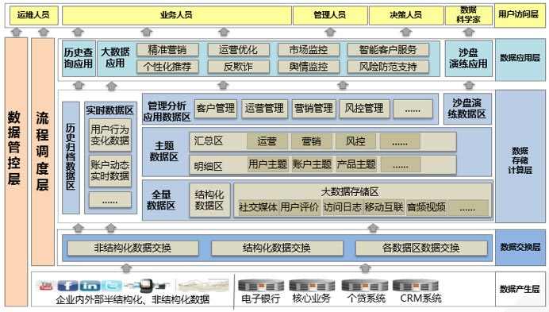
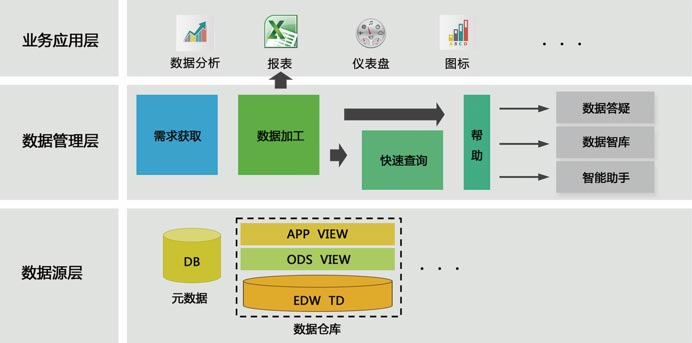
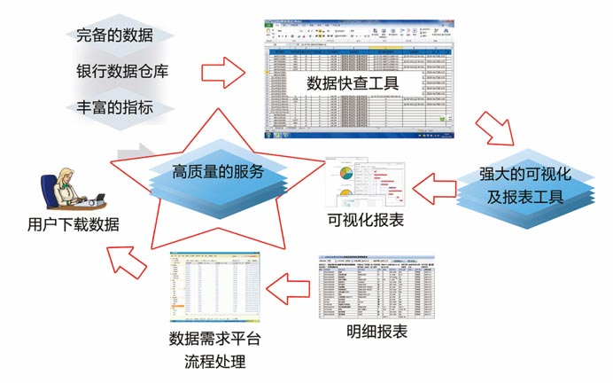

统一自助数据分析平台是为各银行总行及分支行数据分析人员及业务人员提供的自助数据分析服务。基于数据仓库平台，通过整合原有系统资源、开发新的功能模块、使用主流数据分析软件等方式相结合，实现数据需求、数据快查、数据答疑、数据智库、数据助手和数据分析等功能，为全行数据分析人员和业务人员提供简单易用、交互性很强的数据分析平台。

1.战略决策：通过分析金融各部门每日报表数据以及与金融业务相关投资的对比来分析接下来的工作重心，并根据分析需求范围，协助客户共同梳理业务指标；
2.市场监控：通过对不同数据信息的监控，查看市场中业务量的走势及同时查看在其中发生的大事件，分析对业务的发展是否产生影响。例如：利用金融卡刷卡记录来寻找财富管理人群；利用数据库营销，挖掘高端财富客户等；
3.风险管理：任何一家金融都需要准确的评估风险，而博易的解决方案对风险和后果具有全面又准确的考虑，能够让金融有效地评估信贷风险。
4.日常报表：直连数据库的报表中，如果数据量大报表响应速度太慢，通过搭建分布式数据集市，可由十几分钟的响应速度提升至10到100倍；
技术框架：

1、数据层：基于银行数据仓库平台，提供各个业务分析主题数据，或根据业务数据需求，基于数据仓库平台构建新的数据模型，提供分析主题所需的数据。元数据库提供数据仓库的元数据，由数据快查功能提供数据分析模型结构的查询和了解。
2、数据管理层：是该方案主要功能模块，提供统一数据门户、数据需求管理、数据加工、数据快查、数据答疑、数据智库、智能助手等功能，基于数据源层提供给业务应用层各个数据应用功能模块。
3、业务应用层：由银行总行及分支行数据分析人员或业务人员通过数据管理层的功能模块进行拖拽、点击等自助操作，完成自主业务主题的数据分析。
平台功能：

平台管理模块
机构管理：对银行的机构、部门、群组等组织信息进行管理维护，维护机构、部门、群主的基本信息以及其从属关系，方便用户的功能权限和数据权限管理。
用户管理：统一进行用户的基本信息管理，如用户名、密码、姓名、所属机构、部门、条线、权限机构等。用户信息与人力资源系统同步，实现 T+1 自动新增用户、注销离职用户、变更用户部门、机构等基础信息更新。
菜单管理：维护该平台的功能菜单项，对菜单项进行增加、删除、修改等操作，及平台集成tableau产品分析结果的菜单管理、平台集成原报表系统的菜单管理。
权限管理：维护该平台用户的权限管理，包括用户权限、群组权限、机构权限、部门权限等，对权限进行增加、删除、修改等操作，采用多种方式复合分配权限，取权限最大集合。
任务管理：在该平台上使用定时和事件触发方式，监控Tableau产品工作簿所依赖仓库任务调度结果，来完成数据抽取任务、数据导出、定时邮件通知等任务。
使用统计：通过Tableau产品对系统用户的登陆和使用行为进行分析、挖掘，判断用户数据喜好，进行报表和数据模块推荐，尽可能大的提高用户使用效率和访问兴趣，提高仓库数据使用率，发掘仓库数据应用价值。
日志管理：日志管理包括两个方面的内容：即用户日志管理和系统日志管理。其中用户日志管理主要进行记录用户的登录、退出及其简单操作的记录；系统日志管理主要进行系统运行日志、任务日志的记录。
数据快查模块
元数据管理模块，提供给数据分析人员和数据管理员查看和了解在线自助分析平台的数据模型层APPVIEW层和ODBVIEW层，可在页面上快速查找所需要的数据模型的表和结构，以及详细的字段级血缘查询，并且可以通过可视化操作界面生成简单的SQL语句，快速查询和预览数据。
数据分析展现模块
按照业务条线和一线业务人员需求，通过Tableau产品分析整合出的十多个业务分析场景整合到自助数据分析平台，通过对用户权限的机构、部门、群组等维度的划分，真正实现系统的个性化定制和数据权限的精确管理。用户通过Tableau产品的B/S模式，根据系统赋予的权限对有权限的分析主题或视图根据自己的数据分析需求进行自主取数和自主分析，真正实现人人都是数据分析师的系统建设目标。
数据答疑模块
数据答疑、在线感知等多种在线和离线交互方式，实现用户和开发者的零距离交互。
数据智库模块
数据智库功能提供平台的各种帮助资料并提供交流论坛，系统用户可在该论坛中发表平台相关帖子，包括使用技巧、数据分析主题等，供用户交流讨论。
数据助手模块
提供在线自助数据分析平台知识库的管理，接入银行现有全行搜索功能。
使用机器人对全行搜索的信息采用关键字检索功能，用户在机器人界面输入关键字，机器人将自动回复相应内容，方便用户查询和使用知识库。